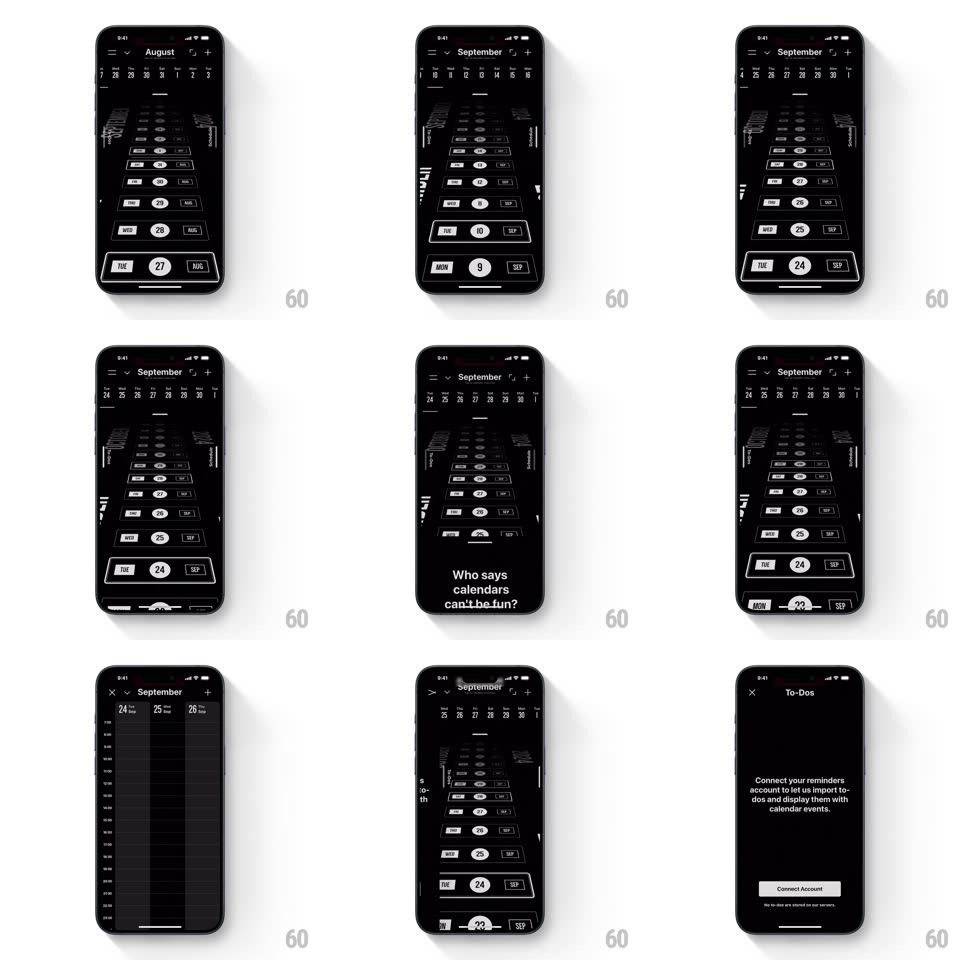

Media
Frame-by-frame

Rebuild this interaction 1:1: Vantage's calendar - a dark date stream rendered as a 3D perspective tunnel (days receding toward a vanishing point, month names printed vertically along the walls) that you fly through with scroll swipes, with edge swipes pivoting to trial/upgrade and To-Dos side pages.

Rebuild this interaction 1:1: Vantage's calendar - a dark date stream rendered as a 3D perspective tunnel (days receding toward a vanishing point, month names printed vertically along the walls) that you fly through with scroll swipes, with edge swipes pivoting to trial/upgrade and To-Dos side pages.
## Integration
Integration: stack-agnostic spec - springs given as stiffness/damping, timed motions as duration + curve; map every value to your framework and animation library of choice.
## Scene
Black calendar: a top week strip (month title, day numbers), then the main stage - a perspective tunnel of day cells receding into the screen, today pill highlighted (white circle, red weekday), month names ("AUGUST", "SEPTEMBER") running vertically at the side walls. Side pages: a trial-expired page ("Get Unlimited for ...") and a To-Dos page ("Connect your reminders account...").
## Motion spec
Pattern: perspective tunnel scroll + edge-swipe page pivots.
- Vertical swipe: the tunnel scrolls THROUGH the camera - day cells scale and brighten as they approach, pass the camera plane, and fall away behind; velocity-tracked with momentum (deceleration ~0.93/frame) and a spring rest (~300/18) on the nearest day.
- The week strip and vertical month labels scroll in sync (strip ticking day-by-day, month text sliding when a boundary passes) - three speeds of the same time.
- Today snaps to a highlighted rest position with a soft glow pulse (600ms).
- Left/right edge swipe: the whole tunnel pivots in 3D (rotateY +-50deg, spring ~300/20) as the side page swings in like a hinged panel - calendar, upgrade, and to-dos are walls of one room.
- Returning: the pivot reverses, the tunnel re-centering with one soft overshoot.
## Calibration
- Perspective is continuous - no cell ever "pops" between flat and 3D.
- The tunnel idles perfectly still - motion belongs to the user's finger alone.
## Reduced motion
Days scroll flat; side pages slide without rotation.
## Don't miss
- The tunnel IS the calendar - the gimmick carries real navigation, not a demo reel.
- Edge-swipe pivot treats pages as physical panels hinged to the calendar's edges.